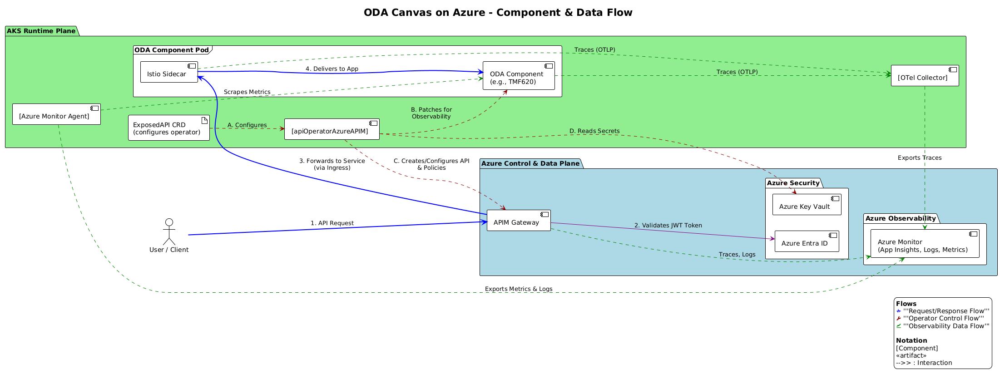

End-to-End Deployment and Observability Guide for TM Forum ODA Canvas on Azure¶
This guide provides a comprehensive, automated approach to deploying the TM Forum Open Digital Architecture (ODA) canvas into Azure. It leverages Infrastructure as Code (Bicep) for reliable setup and implements a complete, end-to-end observability solution using OpenTelemetry, Azure Monitor, and Istio. This guide also includes instructions for implementing Granular RBAC to secure access to observability data.
Architecture Overview¶
The architecture is designed for automation, deep visibility, and security. A request flows from a client to Azure APIM, which initiates a distributed trace. This trace context is propagated through the Istio service mesh to the target ODA component. The component’s OpenTelemetry SDK continues the trace, providing visibility into its internal operations.
All observability data is unified in a central Azure Monitor backend, where Granular RBAC can be applied:
Traces are sent to Azure Application Insights.
Metrics are scraped by the Azure Monitor Agent (AMA) and stored in Azure Monitor Managed Prometheus.
Logs are collected by the AMA and stored in Log Analytics, where access is controlled by ABAC conditions.

Step 0: Automated Infrastructure Provisioning with Bicep¶
First, we create all necessary Azure resources using the deploy_azure_infra.bicep template. This script automates the creation of the VNet, AKS Cluster, APIM, PostgreSQL DB, Key Vault, and all observability components.
0.1 Prerequisites¶
0.2 Create Entra ID App Registration for Backend API¶
# Login to Azure
az login
# Create the backend App Registration
echo "Creating Entra ID App Registration for the backend API..."
BACKEND_APP_JSON=$(az ad app create --display-name "oda-canvas-backend-api")
BACKEND_APP_ID=$(echo $BACKEND_APP_JSON | jq -r '.appId')
# Create a Service Principal for the app
az ad sp create --id $BACKEND_APP_ID > /dev/null
echo "--> Backend App (Client) ID created: $BACKEND_APP_ID"
echo "--> Please save this ID for the next step."
0.3 Deploy the Bicep Template¶
Save the Bicep code provided with this solution into a file named deploy_azure_infra.bicep.
Create a parameter file named azure.parameters.json:
{
"$schema": "https://schema.management.azure.com/schemas/2019-04-01/deploymentParameters.json#",
"contentVersion": "1.0.0.0",
"parameters": {
"resourcePrefix": {
"value": "odacanvas"
},
"adminUserObjectId": {
"value": "<YOUR_USER_OBJECT_ID>"
},
"backendAppClientId": {
"value": "<YOUR_BACKEND_APP_CLIENT_ID>"
},
"entraTenantId": {
"value": "<YOUR_ENTRA_TENANT_ID>"
}
}
}
Replace placeholders:
YOUR_USER_OBJECT_ID: Get with
az ad signed-in-user show --query id -o tsv.YOUR_BACKEND_APP_CLIENT_ID: The ID you saved from the previous step.
YOUR_ENTRA_TENANT_ID: Get with
az account show --query tenantId -o tsv.
0.4 Deploy the infrastructure:¶
# Set a resource group name
RG_NAME="ODA-Canvas-RG"
echo "Creating resource group '$RG_NAME'..."
az group create --name $RG_NAME --location eastus
echo "Deploying Azure infrastructure with Bicep. This may take 20-30 minutes..."
az deployment group create \
--resource-group $RG_NAME \
--template-file deploy_azure_infra.bicep \
--parameters @azure.parameters.json \
--query properties.outputs \
-o json > deployment_outputs.json
echo "--> Infrastructure deployment complete. Outputs saved to deployment_outputs.json"
0.4. Configure Key Vault¶
Populate Key Vault with the secrets needed by the apiOperatorAzureAPIM operator.
echo "Populating Key Vault with secrets..."
RG_NAME="ODA-Canvas-RG"
KEY_VAULT_NAME=$(jq -r '.KEY_VAULT_NAME.value' deployment_outputs.json)
APIM_NAME=$(jq -r '.APIM_SERVICE_NAME.value' deployment_outputs.json)
SUBSCRIPTION_ID=$(az account show --query id -o tsv)
TENANT_ID=$(jq -r '.parameters.entraTenantId.value' azure.parameters.json)
BACKEND_CLIENT_ID=$(jq -r '.parameters.backendAppClientId.value' azure.parameters.json)
APP_INSIGHTS_KEY=$(jq -r '.APP_INSIGHTS_INSTRUMENTATION_KEY.value' deployment_outputs.json)
az keyvault secret set --vault-name $KEY_VAULT_NAME --name "apim-service-name" --value "$APIM_NAME"
az keyvault secret set --vault-name $KEY_VAULT_NAME --name "resource-group" --value "$RG_NAME"
az keyvault secret set --vault-name $KEY_VAULT_NAME --name "subscription-id" --value "$SUBSCRIPTION_ID"
az keyvault secret set --vault-name $KEY_VAULT_NAME --name "aad-tenant-id" --value "$TENANT_ID"
az keyvault secret set --vault-name $KEY_VAULT_NAME --name "aad-client-id" --value "$BACKEND_CLIENT_ID"
az keyvault secret set --vault-name $KEY_VAULT_NAME --name "app-insights-instrumentation-key" --value "$APP_INSIGHTS_KEY"
# In a real scenario, you would securely fetch the PG password and store it.
# Example: az keyvault secret set --vault-name $KEY_VAULT_NAME --name "db-connection-string" --value "..."
echo "--> Key Vault configuration complete."
Step 1: Connect to the AKS Cluster¶
echo "Connecting to the new AKS cluster..."
RG_NAME="ODA-Canvas-RG"
AKS_NAME=$(jq -r '.AKS_CLUSTER_NAME.value' deployment_outputs.json)
az aks get-credentials --resource-group $RG_NAME --name $AKS_NAME --overwrite-existing
Step 2: Deploy ODA Canvas Foundation (Istio)¶
echo "Deploying ODA Canvas foundation with Istio..."
# Assumes you have the oda-canvas-charts repository cloned
helm install oda-canvas ./charts/oda-canvas -n oda --create-namespace
# Verify Istio deployment
kubectl get pods -n istio-system
Step 3: Deploy the OpenTelemetry Collector¶
The collector will receive traces from Istio and applications and forward them to Azure Monitor.
Save the
otel-collector-config.yamlprovided with this solution.Create a deployment manifest
otel-collector-deployment.yaml:
# otel-collector-deployment.yaml
apiVersion: apps/v1
kind: Deployment
metadata:
name: otel-collector
namespace: istio-system
spec:
replicas: 1
selector:
matchLabels: { app: opentelemetry, component: otel-collector }
template:
metadata:
labels: { app: opentelemetry, component: otel-collector }
spec:
containers:
- name: otel-collector
image: otel/opentelemetry-collector-contrib:latest
env:
- name: APP_INSIGHTS_INSTRUMENTATION_KEY
valueFrom: { secretKeyRef: { name: otel-secrets, key: APP_INSIGHTS_KEY } }
command:
- "/otelcontribcol"
- "--config=/conf/otel-collector-config.yaml"
volumeMounts:
- name: otel-collector-config-vol
mountPath: /conf
volumes:
- name: otel-collector-config-vol
configMap:
name: otel-collector-conf
---
apiVersion: v1
kind: Service
metadata:
name: otel-collector
namespace: istio-system
spec:
ports:
- name: grpc-otlp
port: 4317
protocol: TCP
targetPort: 4317
selector:
component: otel-collector
Create a secret with your Application Insights key and apply the manifests:
echo "Deploying OpenTelemetry Collector..."
APP_INSIGHTS_KEY=$(jq -r '.APP_INSIGHTS_INSTRUMENTATION_KEY.value' deployment_outputs.json)
kubectl create secret generic otel-secrets -n istio-system --from-literal=APP_INSIGHTS_KEY=$APP_INSIGHTS_KEY --dry-run=client -o yaml | kubectl apply -f -
kubectl apply -f otel-collector-config.yaml -n istio-system
kubectl apply -f otel-collector-deployment.yaml -n istio-system
Step 4: Configure Istio for Tracing¶
Update the Istio mesh configuration to send traces to our new collector.
echo "Configuring Istio Mesh for E2E Tracing..."
kubectl apply -f - <<EOF
apiVersion: mesh.istio.io/v1alpha1
kind: MeshConfig
metadata:
name: default
namespace: istio-system
spec:
extensionProviders:
- name: "otel"
opentelemetry:
service: "otel-collector.istio-system.svc.cluster.local"
port: 4317
defaultConfig:
tracing:
sampling: 100.0
custom_tags:
"component": { literal: { value: "istio-proxy" } }
provider:
name: "otel"
EOF
Step 5: Deploy the apiOperatorAzureAPIM¶
Deploy the enhanced operator that automates observability and APIM configuration. This operator uses a ClusterRole to grant it the necessary permissions to patch Deployments and Services in any namespace where an ODA component might be deployed.
This manifest sets up the necessary permissions for the operator. It grants permissions to manage its own CRDs (exposedapis), create networking resources (ingresses), and critically, to get, list, and patch Deployments and Services cluster-wide so it can inject the observability labels and annotations into any ODA component.
# apioperator-rbac.yaml
apiVersion: v1
kind: Namespace
metadata:
name: operators
---
apiVersion: v1
kind: ServiceAccount
metadata:
name: apioperatorazureapim-sa
namespace: operators
---
apiVersion: rbac.authorization.k8s.io/v1
kind: ClusterRole
metadata:
name: apioperatorazureapim-clusterrole
rules:
# Allow managing its own custom resource across all namespaces
- apiGroups: ["oda.tmforum.org"]
resources: ["exposedapis", "exposedapis/status"]
verbs: ["get", "list", "watch", "patch", "update"]
# Allow managing networking resources for API exposure
- apiGroups: ["networking.k8s.io"]
resources: ["ingresses"]
verbs: ["get", "list", "watch", "create", "update", "patch", "delete"]
# Allow patching Deployments and Services for observability in any component namespace
- apiGroups: ["apps"]
resources: ["deployments"]
verbs: ["get", "list", "watch", "patch"]
- apiGroups: [""]
resources: ["services"]
verbs: ["get", "list", "watch", "patch"]
# Required by Kopf framework for its own operations
- apiGroups: [""]
resources: ["events"]
verbs: ["create"]
- apiGroups: ["apiextensions.k8s.io"]
resources: ["customresourcedefinitions"]
verbs: ["get", "list"]
---
apiVersion: rbac.authorization.k8s.io/v1
kind: ClusterRoleBinding
metadata:
name: apioperatorazureapim-clusterrolebinding
subjects:
- kind: ServiceAccount
name: apioperatorazureapim-sa
namespace: operators
roleRef:
kind: ClusterRole
name: apioperatorazureapim-clusterrole
apiGroup: rbac.authorization.k8s.io
This manifest defines how to run the operator pod. It links to the Service Account for permissions and injects the KEY_VAULT_NAME and LOGGING level from environment variables.
Important: You must replace
# apioperator-deployment.yaml
apiVersion: apps/v1
kind: Deployment
metadata:
name: apioperatorazureapim
namespace: operators
spec:
replicas: 1
selector:
matchLabels:
app: apioperatorazureapim
template:
metadata:
labels:
app: apioperatorazureapim
spec:
serviceAccountName: apioperatorazureapim-sa
containers:
- name: apioperatorazureapim
# IMPORTANT: Replace this with your actual container registry and image tag
image: <YourContainerRegistry>/apioperatorazureapim:latest
imagePullPolicy: Always
env:
- name: KEY_VAULT_NAME
# This value will be set during the deployment script
value: "<YourKeyVaultName>"
- name: LOGGING
value: "INFO" # Can be set to DEBUG for more verbose logs
First, you need to build and push the operator’s Docker image to your container registry.
# In the directory containing the operator's Dockerfile
ACR_NAME="<YourAzureContainerRegistryName>" # e.g., odacanvasacr
az acr login --name $ACR_NAME
docker build -t $ACR_NAME.azurecr.io/apioperatorazureapim:latest .
docker push $ACR_NAME.azurecr.io/apioperatorazureapim:latest
Next, update the apioperator-deployment.yaml file to use your container registry and the Key Vault name from your Bicep deployment.
# Get the Key Vault name from the Bicep outputs
KEY_VAULT_NAME=$(jq -r '.KEY_VAULT_NAME.value' deployment_outputs.json)
ACR_NAME="<YourAzureContainerRegistryName>"
# Use sed to replace the placeholder values in the YAML files.
# For MacOS, use sed -i '' 's/...'
sed -i "s|<YourContainerRegistry>|$ACR_NAME.azurecr.io|g" apioperator-deployment.yaml
sed -i "s|<YourKeyVaultName>|$KEY_VAULT_NAME|g" apioperator-deployment.yaml
Now, deploy the operator and its RBAC configuration using the provided apioperator-rbac.yaml and apioperator-deployment.yaml files.
echo "Deploying the apiOperatorAzureAPIM and its RBAC resources..."
# This first file creates the 'operators' namespace, a ServiceAccount,
# a ClusterRole for permissions, and a ClusterRoleBinding to link them.
kubectl apply -f apioperator-rbac.yaml
# This second file deploys the operator pod itself.
kubectl apply -f apioperator-deployment.yaml
# Verify the operator pod is running
echo "Verifying operator status..."
sleep 10 # Give the pod a moment to start
kubectl get pods -n operators
Step 6: Apply the ExposedAPI Custom Resource Definition¶
Before you can create ExposedAPI resources, you must first teach your Kubernetes cluster what they are. The exposedapi-crd.yaml file defines the schema for this custom resource. This is a one-time setup step for your cluster.
Create a file named exposedapi-crd.yaml with the content provided in the solution documentation. Then, apply it to the cluster:
echo "Applying the Custom Resource Definition for ExposedAPI..."
kubectl apply -f exposedapi-crd.yaml
# Verify that the CRD has been successfully created
kubectl get crd exposedapis.oda.tmforum.org
Step 7: Guidance for ODA Component Developers¶
To achieve E2E tracing, application code must be instrumented with the OTel SDK.
Example: Instrumenting a Python/Flask TMF API¶
Add health check endpoints (/health/live, /health/ready) to your Flask app.
Install OTel dependencies: opentelemetry-api, opentelemetry-sdk, opentelemetry-exporter-otlp, opentelemetry-instrumentation-flask.
Instrument your app.py:
# app.py of your TMF component
from flask import Flask
from opentelemetry import trace
from opentelemetry.sdk.trace import TracerProvider
from opentelemetry.sdk.trace.export import BatchSpanProcessor
from opentelemetry.exporter.otlp.proto.grpc.trace_exporter import OTLPSpanExporter
from opentelemetry.instrumentation.flask import FlaskInstrumentor
# Point to the OTel Collector service in your K8s cluster
otlp_exporter = OTLPSpanExporter(endpoint="otel-collector.istio-system.svc.cluster.local:4317", insecure=True)
trace.set_tracer_provider(TracerProvider())
trace.get_tracer_provider().add_span_processor(BatchSpanProcessor(otlp_exporter))
app = Flask(__name__)
FlaskInstrumentor().instrument_app(app) # Automatically instrument Flask requests
tracer = trace.get_tracer(__name__)
@app.route('/product-catalog/v1/product')
def get_products():
# Add custom spans for specific business logic
with tracer.start_as_current_span("query_database_for_products") as db_span:
db_span.set_attribute("db.system", "postgresql")
products = [{"id": "123", "name": "5G Unlimited Plan"}]
return products
Step 8: Creating Observability Dashboards in Azure Monitor¶
Use Azure Monitor Workbooks to build dashboards for health, traffic, and performance.
8.1. Dashboard 1: The ODA Canvas Health & Traffic Overview¶
This workbook provides an at-a-glance view of the entire system’s health.
Navigate to Azure Portal > Monitor > Workbooks and create a new workbook.
Use the Advanced Editor (</>) to add widgets with the following KQL queries.
Widget: ODA Component Health Status
// ODA Component Pod Health
KubePodInventory
| where TimeGenerated > ago(10m)
| where isnotempty(PodLabel) and PodLabel has 'oda.tmforum.org/component'
| extend ODAComponent = tostring(parse_json(PodLabel).['oda.tmforum.org/component'])
| summarize arg_max(TimeGenerated, PodStatus, PodUid) by ODAComponent, Name
| project ODAComponent, PodName=Name, Status=PodStatus
| evaluate pivot(PodName, any(Status))
Visualization: Tiles
Widget: API Gateway (APIM) Performance
// APIM Gateway Performance
ApiManagementGatewayLogs
| summarize AvgDurationMs=avg(DurationMs), P95DurationMs=percentile(DurationMs, 95) by bin(TimeGenerated, 5m), ApiId
| render timechart
Visualization: Time chart
8.2. Workflow 2: E2E Transaction Analysis¶
This is an interactive troubleshooting workflow within Application Insights.
Navigate to your Application Insights resource and select Application Map. Observe the auto-generated dependency graph showing the flow from APIM -> Istio -> ODA Component -> Database. Click on a component to Investigate Performance or Failures. Select a sample request to open the End-to-end transaction details view. This Gantt chart shows the time spent in each layer of the request, pinpointing bottlenecks.
Step 9: Configuring Granular RBAC for Observability Data¶
Ensure that different teams can only view the logs and metrics for the services they own.
9.1. Strategy¶
Use Custom Azure Roles with Attribute-Based Access Control (ABAC) conditions that filter data based on the oda.tmforum.org/component label.
9.2. Implementation Example¶
Let’s create a restricted role for a team that only manages the tmf620-product-catalog.
Create an Entra ID Group for each application team (e.g., ODA-Team-TMF620). In the Azure Portal, navigate to Azure Active Directory > Groups and create a new security group named
ODA-Team-TMF620. Add the members of the product catalog team to this group.Define a Custom Role in a JSON file (oda-component-log-reader-role.json) that grants read access to specific Log Analytics tables like ContainerLogV2 and InsightsMetrics.
{
"name": "ODA Component Log Reader",
"isCustom": true,
"description": "Can read specific log tables and view data for their assigned ODA component.",
"assignableScopes": [
"/subscriptions/{subscriptionId}/resourceGroups/{resourceGroupName}"
],
"actions": [
"Microsoft.OperationalInsights/workspaces/read",
"Microsoft.OperationalInsights/workspaces/query/read",
"Microsoft.OperationalInsights/workspaces/query/ContainerLogV2/read",
"Microsoft.OperationalInsights/workspaces/query/InsightsMetrics/read",
"Microsoft.Insights/components/read"
],
"notActions": [],
"dataActions": [],
"notDataActions": []
}
Important: Replace {subscriptionId} and {resourceGroupName} with the actual IDs of your ODA Canvas deployment. Limiting the scope is a security best practice.
# Create the custom role
az role definition create --role-definition @oda-component-log-reader-role.json
Assign the Role with a ABAC Condition: Assign the custom role to an Entra ID group, but add a dynamic ABAC condition that filters the log data based on the ODA component label..
This is the most critical step. We will assign the newly created role to the ODA-Team-TMF620 group at the scope of our resource group. The magic happens in the –condition parameter. First, get the necessary IDs:
First, get the necessary IDs:
LOG_ANALYTICS_NAME=$(jq -r '.logAnalyticsWorkspaceName.value' deployment_outputs.json)
# Get the Resource ID of your Log Analytics Workspace
WORKSPACE_ID=$(az monitor log-analytics workspace show --resource-group ODA-Canvas-RG --workspace-name $LOG_ANALYTICS_NAME --query id -o tsv)
# Get the Object ID of the Entra ID group
GROUP_ID=$(az ad group show --group "ODA-Team-TMF620" --query id -o tsv)
# Get the Role Definition ID
ROLE_ID=$(az role definition list --name "ODA Component Log Reader" --query "[0].id" -o tsv)
# Get the Resource Group ID
RG_ID=$(az group show --name ODA-Canvas-RG --query id -o tsv)
Now, construct the ABAC condition. The Properties.LogEntry path is specific to how ContainerLogV2 structures its data. The _ResourceId check is a best practice to ensure the query is performant.
# The ABAC condition filters rows in the ContainerLogV2 table
# It checks if the 'LogEntry' contains a property matching our component label
# Note the '_s' suffix for string fields in KQL queries on dynamic properties
CONDITION="@Resource[Microsoft.OperationalInsights/workspaces/query/ContainerLogV2/read] String_equals_ignore_case 'tmf620-product-catalog' IN (@subscript(Properties.LogEntry, 'oda.tmforum.org/component_s'))"
Finally, create the role assignment with the condition:
az role assignment create \
--assignee-object-id $GROUP_ID \
--assignee-principal-type "Group" \
--role "ODA Component Log Reader" \
--scope $RG_ID \
--condition "$CONDITION" \
--condition-version "2.0"
9.3. How It Works and Verification¶
A user in the restricted group who queries ContainerLogV2 will only see logs from the tmf620-product-catalog pods.
Log Ingestion: When our apiOperatorAzureAPIM operator patches a pod, it adds the label oda.tmforum.org/component: tmf620-product-catalog. The Azure Monitor Agent collects the logs and includes these labels as structured properties.
User Query: A member of the ODA-Team-TMF620 group logs into the Azure Portal and runs a query against the ContainerLogV2 table in the shared Log Analytics Workspace.
ABAC Enforcement: Before executing the query, Azure’s RBAC engine evaluates the condition on their role assignment. It automatically appends a WHERE clause to their query that filters for rows where the component label equals tmf620-product-catalog.
Result: The user sees only the logs from the TMF620 component. Logs from any other ODA component are completely invisible to them, enforcing strict data partitioning.
To verify, have a user who is only in the ODA-Team-TMF620 group run this query in Log Analytics:
ContainerLogV2
| take 100
They will only see logs from the tmf620-product-catalog pods, even though the query itself did not specify a filter.
Step 10: Deploy an ODA Component¶
Deploy the TMF620 Product Catalog component. Ensure its manifest includes livenessProbe and readinessProbe health checks and that it is instrumented with the OpenTelemetry SDK as described in Step 7.
# Label the namespace for Istio injection
kubectl create ns components
kubectl label namespace components istio-injection=enabled
# Apply the component's Deployment and Service manifests
kubectl apply -f tmf620-deployment.yaml -n components
Step 11: Expose the API¶
Create an ExposedAPI custom resource for the component. The operator will automatically handle APIM configuration, observability patching, and tracing policy injection.
kubectl apply -f tmf620-exposedapi.yaml -n components
Step 12: Verify the Full Solution¶
Health: Check pod status and health probes: kubectl describe pod
-n components. Dashboards: View the live data on your Azure Monitor Workbooks.
Tracing: Send a request via the APIM gateway and trace it from end-to-end in the Application Map.
Security: Log in as a user with the restricted RBAC role and verify they can only see logs for their assigned component in Log Analytics.
Future improvements¶
Issue: The current setup relies on the AKS node’s Managed Identity for the operator to access Key Vault. This is functional but less secure than the recommended Azure Workload Identity, which grants identity at the pod/ServiceAccount level. The Bicep file correctly enables the OIDC issuer on AKS, which is the first step.
Impact: All pods on a node share the same identity, violating the principle of least privilege.
Correction: Add steps to create a federated credential linking the operator’s Kubernetes Service Account to its Azure AD identity. This would be a significant security improvement. While too long to detail here, it involves using az ad app federated-credential create. For the scope of this project, you can add a note that Workload Identity is the recommended production pattern.
Helpful Resources¶
TM Forum ODA: TM Forum Open Digital Architecture
TMF620 Product Catalog: TMF620 Product Catalog Component
Azure Documentation:
Istio Documentation: Istio Service Mesh